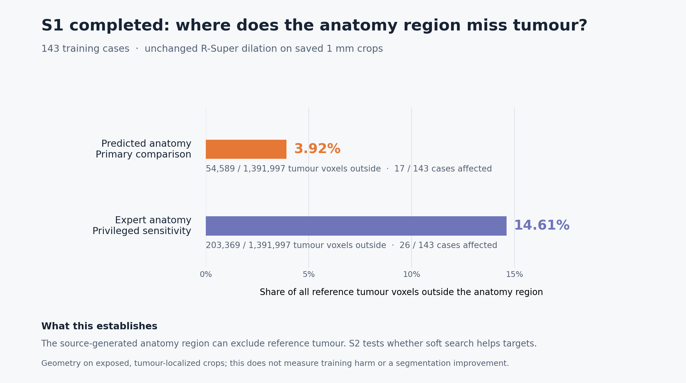
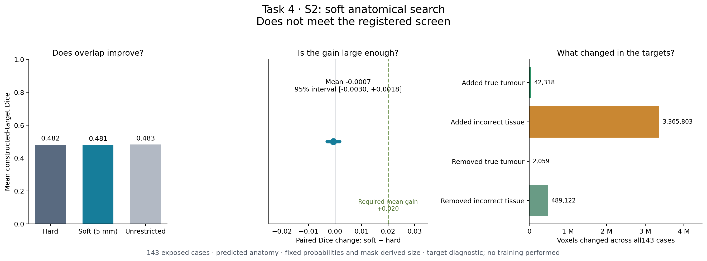

Margin-aware uncertainty band
An edge band whose width follows the reported margin, so an ill-defined tumour isn't forced onto a sphere.
Method & evidence
Our question: can radiology report language, tumour morphology and surrounding anatomy make a CT segmentation model's tumour outlines more faithful to the true shape? The model must still work from the CT alone at inference. Below is the method, every result so far, and the bar a result must clear before we call it a win.
The question
Hand-drawn tumour outlines exist for only a few hundred to a few thousand public CT scans. Hospitals hold tens of thousands of CTs already paired with a written radiology report.
R-Super, a published method and the baseline we build on, learns from those reports. It reads the reported tumour size and location, builds a ball-shaped target inside the reported organ region, and trains the model to match that target and the reported volume. That works well for finding tumours but poorly for tracing their edges. It also discards the words a radiologist uses to describe the edge: “well-circumscribed”, “ill-defined”, “encasing”, “central necrosis”.
We change how that model is trained, not what it needs at the point of use. Reports and expert outlines are used only during training; the deployed model receives CT alone.
Method
Each change is small enough to attribute on its own and is compared with the unchanged baseline and a matched control. We don't stack them until each has been judged on its own.
An edge band whose width follows the reported margin, so an ill-defined tumour isn't forced onto a sphere.
Pull the predicted edge toward the reported one only where the report says the edge is sharp.
Relax supervision inside tumours reported as necrotic, where the interior doesn't look like solid tumour.
Replace the hard pancreas cut, which deletes tumour outside the organ mask, with a soft, distance-weighted prior.
Current focus · Soft boundary study
The baseline treats the pancreas as a hard wall. During training, supervision is confined to a dilated organ region; at inference, predicted tumour outside the organ is deleted. Pancreatic cancer routinely extends beyond the gland, so we measured the cost before proposing a fix.
143 training cases, unchanged baseline dilation, saved 1 mm crops.
The anatomy region the model is allowed to search can exclude real, expert-labelled tumour. With the expert pancreas mask, one in seven tumour voxels sits outside it.
An earlier 16-case check, E01, pointed the same way. Reference tumour lay outside the supplied pancreas mask in 7 of 8 positive cases (74% of reference volume). A strict cut would have removed 27.90 mL of correctly predicted tumour to save 1.68 mL of false positives.
We tested the simplest fix: widen the search with a soft 5 mm region and see whether the constructed training targets improve. They don't. Mean paired Dice changed by −0.0007 (95% interval −0.0030 to +0.0018), against a pre-registered bar of +0.020. Softening added 42,318 true tumour voxels but 3,365,803 incorrect ones.
So the lever has to be smarter than “search wider”. This is why our other levers bring in report language and morphology.


What didn't work
We publish failed ideas with the same care as promising ones, because they decide what we build next.
| Training arm | Positive NSD @ 2 mm | Positive Dice | Negatives with false positives |
|---|---|---|---|
| Report-off | 36.95% | 44.93% | 22 / 32 |
| Aligned reports | 32.51% | 41.25% | 28 / 32 |
| Permuted reports | 34.33% | 41.67% | 26 / 32 |
Feeding the reports in more directly did not improve boundaries. Both intervals included zero, so this is a negative or inconclusive benefit, not proof that report supervision can't help. It is why we moved from “give the model the words” to “let the words change how much to trust the edge”.
Extra weight on high-gradient tumour voxels failed all four matched comparisons in a 1,200-update pilot.
It fixed some local errors but made the whole mask worse: Dice fell from 0.50 to 0.37 on the positive development scan. We kept the original aggregation.
A language-model refiner didn't show a robust benefit, and CT-only inference worsened mean NSD by 4.6 to 9.4 points across four checkpoints.
Success bar
These are fixed before we look at new outcomes. They are targets, not results.
Work with us
We're especially interested in radiologists' views on margin language and in datasets with real paired reports.
{kind=link}
{kind=link}